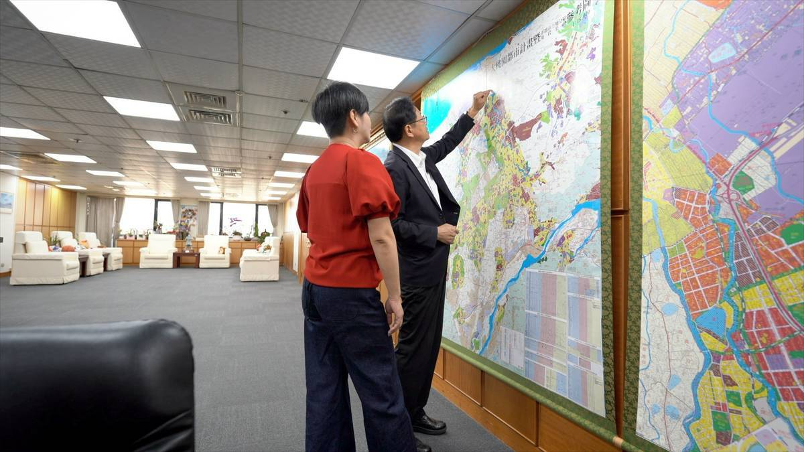
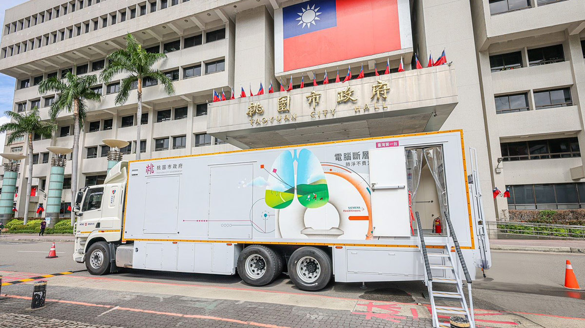

▲ 張善政關心教育，提出孩子書課本免費政策，有20萬人受惠。
他的城市考題
◎ 報導／呂佳頴
◎ 攝影／柯勝雄
2026年10月
桃園市政府市長辦公室
走到哪，都聽得到AI。有人拿來聊天，有人拿來寫文章，也有人開始把它變成工作的一部分。如果是一位市長呢？他會怎麼用？採訪張善政之前，我一直很好奇，因為他是個從科技業界來的政治人物。
走進張善政的辦公室，先被兩張桌子吸引。一張放電腦、看資料；另一張是長長的會議桌，批公文、開會，都在這裡。會議桌旁的櫃子上，放著國中小課本，也放著捷運模型。角落裡，一盆盆綠色植物靜靜長著。放眼所及，沒有刻意布置的模樣，反而是一個人每天工作的樣子。
直到一項新的福利政策攤在桌上，才發現那兩張桌子，不只是桌子。他離開看資料的桌子，走到長桌前，他第一時間沒有先翻公文，而是拿起手機，打開AI，開始打字「比較六都資料」，來確認公文上的資訊，他坦言，若還有疑問，就會趕快把局處找來，把所有資訊都攤開，才做最後決定。
▲ 張善政在辦公桌前看資料、做功課。他辦公室有兩張桌子，一張看資料，一張批公文。（圖／柯勝雄攝）
一開始，以為這真是個很AI的市長。後來才發現，真正有趣的，不是AI。而是一間辦公室，慢慢透露出一個人整理複雜事情的方法。
一坐上長形會議桌，他介紹起桌上的三樣東西。那是他的「批公文三寶」：印章、立可白，和一張墊板。批公文為什麼要有墊板？「附件很多。」「紙會高高低低。」「墊一下，比較好寫。」我點點頭，以為事情講完了，沒想到下一句更有趣。
「這個買不到。」他拿起墊板說。這不是什麼特殊材質，而是口罩包裝盒裁的。因為市售墊板太大，他嫌不好用，乾脆自己裁。「我有三片。」他才說完，我開始掃視桌面，明明只有一片啊。「一片放這裡，一片放另一張桌子，家裡還有一片。」
我又注意到，他批公文的筆，就是支再普通不過的原子筆。我笑著問：「有人簽公文會用鋼筆或自來水筆。」他頭微微側了一下，像是在想：有需要嗎？然後才說：「只要是會讓速度變慢的，統統不要。」
那個側頭的表情，其實比答案更有意思。因為他在意的，不是工具漂不漂亮。而是事情能不能更順、更有效率。所以，AI不是突然出現在張善政辦公室裡的新玩具。它比較像另一張墊板，把高高低低的資訊墊平，讓判斷可以寫下去。
▲ 張善政拿著「自製」的小墊板批公文，因為公文附件多，簽名時難免凹凸不平。而他批公文有三寶 : 圖章、立可帶和小墊板，近來也有AI加入討論。（圖／柯勝雄攝）
長桌旁的櫃子上，擺著課本；課本旁邊，是韓國樂鐵公司送的列車模型，我以為他會先聊交通。結果沒有。張善政先拿起的是課本說，「九月開始，桃園國中小全面免書籍費。」
教育局當初簡報時，不只帶資料，還把一本一本課本搬進辦公室。「既然是義務教育，教科書是不是就不該讓家長付費？」他翻了一下，很快點頭。
一年六億元，近廿萬名學生受惠。他覺得「值得」。這時放下課本，他才拿起列車模型。「年底通車的綠線，就是這台，只是顏色不同。」我問：「什麼顏色？」他笑著回：「綠毛毛蟲。」「對齁，這是綠線。」我也笑了。這時，他走到另一邊的桃園地圖，手一直在地圖上比畫。「機場捷運、綠線、延伸中壢，最後這會形成環狀線。」

▲ 張善政在桃園地圖前，比劃著捷運綠線會從哪裡，通到哪裡。年底，綠線有機會通車， 這是桃園人盼了很久的第一條捷運。（圖／柯勝雄攝）
那中間的公車接駁呢？畢竟桃園人抱怨的，不只是捷運，還有公車問題。他坦承，交通無法一次到位。但必須一直進步。一張交通藍圖，要真正變成每天的便利，中間還有很多功課。經費是一個問題，工程也必須一步一步完成。
比如綠線原本還要再等幾年，現在拚到年底第一階段通車。他說：「團隊一天當兩天用。」桃園長得太快。人口、產業、交通、生活圈，全都在追時間。所以他看的，不是一條捷運。而是一座快速長大的城市，怎麼把線接起來。
聊到健康議題時，我突然想起曾經看過一份研究：綠地多的地方，肺癌風險似乎比較低。而他的辦公室裡，有不少盆植物。我問：「喜歡種樹嗎？」他笑了一下：「剛好喜歡。」桃園恰恰是全國第一個推免費肺癌篩檢的縣市，但他沒有先講政策，先講工業區、人口、空氣，還有高風險族群。
很多人直覺以為，肺癌高風險就是抽菸。他說，如果按照美國研究，抽菸的人容易得肺癌。但在台灣，不完全是這麼一回事。

▲ 為市民肺癌把關，桃園的行動肺癌LDCT（低劑量電腦斷層）篩檢車，是全台唯一。（桃園市政府提供）
桃園這幾年建立的的資料庫已經發現，得過乳癌或有乳癌家族病史的人，以及廚師、交警，都是高風險族群。
所以，那台開進偏鄉和工業區的CT巡迴車，不是小眾福利。而是一座工業城市開始回頭檢查自己留下什麼。張善政語重心長地說：「桃園承擔很多產業發展的後遺症，桃園人的健康，值得被更仔細地照顧。」再看一眼那些植物，這應該不單純只是裝飾。而是提醒這座工業城市，除了長高，也要長得健康。
桃園，是全台成長最快的城市之一。企業急著投資，交通急著建設，市民急著看到改變。每天都有企業來找市府，希望趕快取得土地、趕快蓋廠。「每一家都說很急。」他笑著說。現在，他會請 AI 幫忙「申論」，不是聊天。把一個產業未來幾年的發展、全球市場需求，甚至某項技術趨勢，一次整理出來。
「大家都來。」「什麼都說明天要。」「真有那麼急？」這時，AI成了他的另一雙眼睛，是他整理資訊的工具。原來，他不是只看企業說了什麼。而是在確認，值不值得現在就把土地留給它。因為每一塊土地，都只有一次機會。每一個決定，都會影響下一個決定。所以，別人愈急，他反而愈不能急。
他看著手機上的AI回覆說：「資料交給AI整理，判斷，我自己做。」這句話很張善政，相信工具，但不把判斷交給工具。重視效率，但不被急迫感推著走。看起來冷靜，甚至有點慢。但對一座快速長大的城市來說，有時候最危險的不是慢，是急著做錯決定。
聊到AI，他突然講起以前到學校演講。過去，他總是鼓勵學生慢慢探索，現在不了。他一直提醒孩子，要更早找到自己的興趣。「不是人生不能摸索，而是科技變化太快。」如果一直不知道自己喜歡什麼，時間很容易就過去了。
▲ 張善政關心教育，提出孩子書課本免費政策，有20萬人受惠。
所以桃園在暑假辦AI、新創等營隊。不是希望每個孩子都走科技業。而是希望他們早一點知道，世界正在變，也早一點搞清楚，自己想往哪裡走。這不是焦慮，比較像一個看過科技速度的人，對下一代的提醒。城市也是一樣，愈是被推著往前走，愈要知道自己要去哪裡。
離開前，我問他，每天都有選舉攻防怎麼調適？張善政答說，一開始的確會生氣。停了一下才說：「現在學會，看到，但是不要看進去。」這回在他辦公室，沒看到他愛的花生和甜食。我問：「不用紓壓了嗎？」他笑著說，要注意各種身體健康指數。問他都不會想偷吃？他舉起雙手遮住眼睛說：「沒看到就好。」
那平常運不運動？他說：「割草。」全場笑翻。他假日偶爾會去當農夫，在大太陽下流汗。原來辦公室那幾盆植物，不只是興趣，也是他的紓壓方式。
走出辦公室前，我回頭再看一眼。兩張桌子、一張墊板、一本本課本、幾台捷運列車模型、還有角落裡那幾盆綠色植物。這些都沒有直接告訴大家，張善政做了什麼。卻讓人看懂，他怎麼整理資訊、整理問題，最後才做判斷。
「桃園」很複雜。國門、航空城、工業區、物流、移工、客庄、沿海，還有一群又一群搬進來的年輕家庭，全都疊在一起。張善政的優勢在於「他會整理」。他把AI當工具，把墊板當工具，把地圖、課本、捷運模型，也都當成理解城市的工具。
但真正決定方向的，不是工具，是人怎麼是決定方向，這正是他的考題。因為市長不能是把事情整理清楚，還要說得出來：整理後的城市要往哪裡去。桃園要問的，不只是誰比較懂科技，也不是誰比較會管理。而是 : 一個擅長整理複雜的人，能不能讓桃園不只是被推著長大，而是長出自己的方向 ？

熟悉制度的法律人，能找回「消失的4分鐘」嗎？

看懂產業布局的人，能不能看見每一種人的生活？

地方跑得久的人，能不能跑出城市方向？

給答案可以很快，城市治理什麼都能馬上辦嗎？

從競爭中突圍的人，能不能讓不同地方、派系與世代重新走在一起？

直率的真實，能轉換成市民的治理信任嗎？

一路把每一棒跑好的人，能不能跑出自己的路線？

習慣把答案整理清楚的人，能面對沒有標準答案的台北嗎？

看見缺口的人，能從台北的各種「可是」裡找到方向嗎？

會維修城市的人，能想像「城市」嗎？

跑遍新北的人，能不能把腳印走成方向？
新聞部
副總經理 王結玲
議題研究中心／呂佳頴
採訪中心攝影組／柯勝雄
網路新聞中心／楊致中・談雍雍・吳家瑜
數位事業部
內容策展組／廖玉貞・彭嘉儀・林佳瑤・李佳綺
© TVBS Media Inc. All Rights Reserved.｜聯利媒體股份有限公司